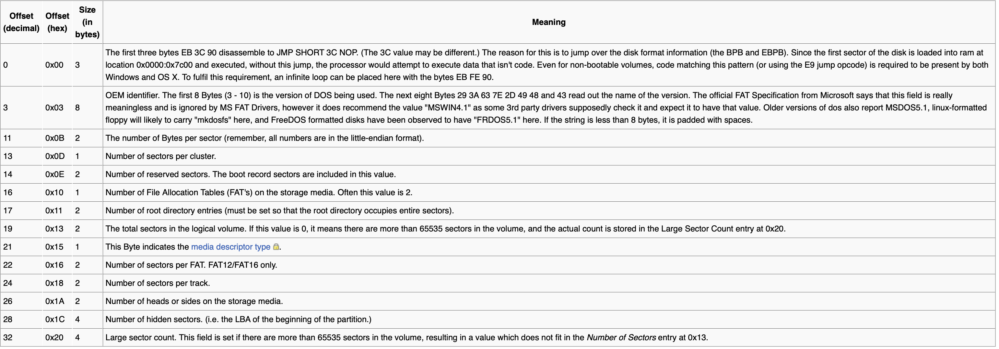
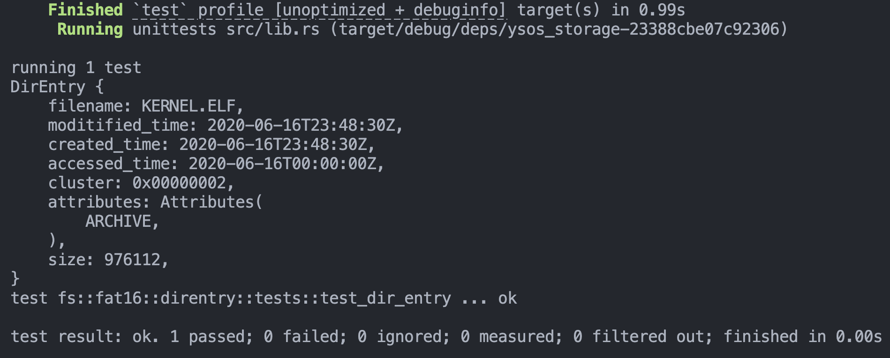
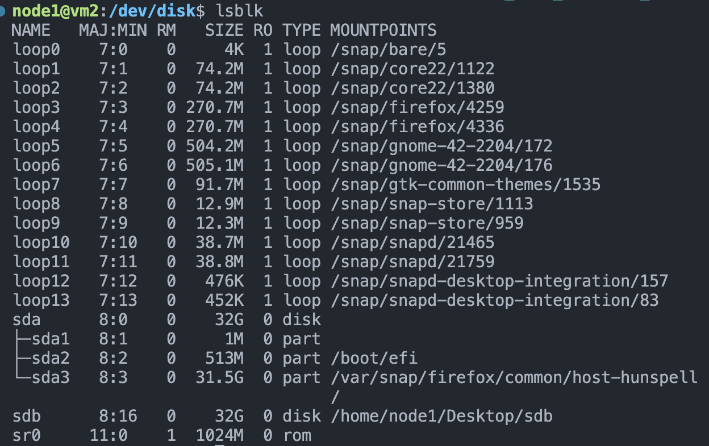

YSOSv2: lab6 实验报告
This report heavily references this repository: GGOS
MBR 分区表¶
在 pkg/storage/src/partition/mbr/mod.rs 的 parse 函数中根据 MBR 的结构定义，按照对应的偏移量，提取四个 MbrPartition 并进行存储：
impl<T, B> PartitionTable<T, B> for MbrTable<T, B>
where
T: BlockDevice<B> + Clone,
B: BlockTrait,
{
fn parse(inner: T) -> Result<Self> {
// ......
for i in 0..4 {
partitions.push(
// Done // FIXME: parse the mbr partition from the buffer
// - just ignore other fields for mbr
MbrPartition::parse(
buffer[0x1be + (i * 16)..0x1be + (i * 16) + 16]
.try_into()
.unwrap(),
)
);
// ......
}
// ......
}
}
参考：https://en.wikipedia.org/wiki/Master_boot_record#PTE，可以找到：
偏移量为 0x01-0x03 和 0x05-0x07 的两组三字节的内容分别表示了开始和结束的 CHS 地址，包含三组内容：
- 磁头号，占用 8 bit
- 扇区号，占用 6 bit
- 磁头号，占用 10 bit

据此在 partition/mbr/entry.rs 中，补全对应的结构体定义：
impl MbrPartition {
/// Parse a partition entry from the given data.
pub fn parse(data: &[u8; 16]) -> MbrPartition {
MbrPartition {
data: data.to_owned(),
}
}
// Done// FIXME: define other fields in the MbrPartition
define_field!(u8, 0x00, status);
// 0x01 - 0x03 begin head , begin sector , begin cylinder
define_field!(u8, 0x04, filesystem_flag);
// 0x05 - 0x07 end head , end sector , end cylinder
define_field!(u32, 0x08, begin_lba);
define_field!(u32, 0x0c, total_lba);
pub fn is_active(&self) -> bool {
self.status() ** 0x80
}
pub fn partition_type(&self) -> u8 {
self.filesystem_flag()
}
pub fn begin_head(&self) -> u8 {
self.data[1]
}
pub fn begin_sector(&self) -> u8 {
self.data[2] & 0x3f
}
pub fn begin_cylinder(&self) -> u16 {
(self.data[2] as u16 & 0xc0) << 2 | (self.data[3] as u16)
}
pub fn end_head(&self) -> u8 {
self.data[5]
}
pub fn end_sector(&self) -> u8 {
self.data[6] & 0x3f
}
pub fn end_cylinder(&self) -> u16 {
(self.data[6] as u16 & 0xc0) << 2 | (self.data[7] as u16)
}
}
在测试 MBR 模块之前，在 pkg/storage/src/partition/mod.rs 中还需要补全 2 个函数：
impl<T, B> BlockDevice<B> for Partition<T, B>
where
T: BlockDevice<B>,
B: BlockTrait,
{
// ......
fn read_block(&self, offset: usize, block: &mut B) -> Result<()> {
if offset >= self.size {
return Err(FsError::InvalidOffset);
}
// Done // FIXME: calculate the block offset for inner device
let offset = offset + self.offset;
// Done // FIXME: read from the inner device
self.inner.read_block(offset, block)
}
fn write_block(&self, offset: usize, block: &B) -> Result<()> {
if offset >= self.size {
return Err(FsError::InvalidOffset);
}
// Done // FIXME: calculate the block offset for inner device
let offset = offset + self.offset;
// Done // FIXME: write to the inner device
self.inner.write_block(offset, block)
}
}
单元测试 1¶
在 pkg/storage/src/lib.rs 中注释掉尚未完成的 fs 包：
根目录下运行如下指令，对 ysos_storage 中的 partition 包进行测试
测试结果如下：
磁盘驱动¶
为了在内核中使用 storage 包的内容，需要对 Cargo.toml 进行修改，添加引用：
同时还要在 pkg/kernel/src/drivers/mod.rs 中，增加 ata 包：
发送命令¶
- 参考：https://wiki.osdev.org/ATA_PIO_Mode#28_bit_PIO
在 kernel/src/drivers/ata/bus.rs 中，将发送命令并等待设备就绪的过程封装为一个函数 write_command，发送命令的过程：
- 将当前块的 LBA 偏移分别存入四个寄存器中
- 同时使用
drive寄存器选择磁盘 - 发送命令
- 等待设备就绪，判断是否出错
- 等待数据请求就绪
impl AtaBus {
fn write_command(&mut self, drive: u8, block: u32, cmd: AtaCommand) -> storage::Result<()> {
let bytes = block.to_le_bytes(); // a trick to convert u32 to [u8; 4]
unsafe {
// just 1 sector for current implementation
self.sector_count.write(1);
// Done // FIXME: store the LBA28 address into four 8-bit registers
// - read the documentation for more information
// - enable LBA28 mode by setting the drive register
self.drive.write(0xE0 | (drive << 4) | (bytes[3] & 0x0F));
self.lba_low.write(bytes[0]);
self.lba_mid.write(bytes[1]);
self.lba_high.write(bytes[2]);
// Done // FIXME: write the command register (cmd as u8)
self.command.write(cmd as u8);
}
if self.status().is_empty() {
// unknown drive
return Err(storage::DeviceError::UnknownDevice.into());
}
// Done // FIXME: poll for the status to be not BUSY
self.poll(AtaStatus::BUSY, false);
if self.is_error() {
warn!("ATA error: {:?} command error", cmd);
self.debug();
return Err(storage::DeviceError::InvalidOperation.into());
}
// Done // FIXME: poll for the status to be not BUSY and DATA_REQUEST_READY
self.poll(AtaStatus::BUSY, false);
self.poll(AtaStatus::DATA_REQUEST_READY, true);
Ok(())
}
}
这里 sector_count 寄存器直接被设置为了 1 ，采取每次写指令只读一块的方式。
实现 WritePio 指令，即 28-bit 模式下的 LBA 写命令：
impl AtaBus {
pub(super) fn write_pio(&mut self, drive: u8, block: u32, buf: &[u8]) -> storage::Result<()> {
self.write_command(drive, block, AtaCommand::WritePio)?;
// Done // FIXME: write the data from the buffer into the data port
// - use `buf.chunks(2)`
// - use `self.write_data()`
// - ! pay attention to data endianness
for chunk in buf.chunks(2) {
let data = u16::from_le_bytes(chunk.try_into().unwrap());
self.write_data(data);
}
if self.is_error() {
debug!("ATA error: data write error");
self.debug();
Err(storage::DeviceError::WriteError.into())
} else {
Ok(())
}
}
}
实现 ReadPio 指令，即 28-bit 模式下的 LBA 读命令：
impl AtaBus {
pub(super) fn read_pio(
&mut self,
drive: u8,
block: u32,
buf: &mut [u8],
) -> storage::Result<()> {
self.write_command(drive, block, AtaCommand::ReadPio)?;
// Done // FIXME: read the data from the data port into the buffer
// - use `buf.chunks_mut(2)`
// - use `self.read_data()`
// - ! pay attention to data endianness
for chunk in buf.chunks_mut(2) {
let data = self.read_data().to_le_bytes();
chunk.clone_from_slice(&data);
}
if self.is_error() {
debug!("ATA error: data read error");
self.debug();
Err(storage::DeviceError::ReadError.into())
} else {
Ok(())
}
}
}
磁盘识别¶
- 参考：https://wiki.osdev.org/IDE
实现 IdentifyDevice 命令，用于获取磁盘的信息，解析为 AtaDrive 的相关信息：
impl AtaBus {
pub(super) fn identify_drive(&mut self, drive: u8) -> storage::Result<AtaDeviceType> {
info!("Identifying drive {}", drive);
// Done // FIXME: use `AtaCommand::IdentifyDevice` to identify the drive
if self // call `write_command` with `drive` and `0` as the block number
.write_command(drive, 0, AtaCommand::IdentifyDevice)
.is_err()
{
if self.status().is_empty() {
// if the status is empty, return `AtaDeviceType::None`
return Ok(AtaDeviceType::None);
} else {
// else return `DeviceError::Unknown` as `FsError`
return Err(storage::DeviceError::Unknown.into());
}
}
// Done // FIXME: poll for the status to be not BUSY
self.poll(AtaStatus::BUSY, false);
Ok(match (self.cylinder_low(), self.cylinder_high()) {
// we only support PATA drives
(0x00, 0x00) => AtaDeviceType::Pata(Box::new([0u16; 256].map(|_| self.read_data()))),
// ignore the data as we don't support following types
(0x14, 0xEB) => AtaDeviceType::PataPi,
(0x3C, 0xC3) => AtaDeviceType::Sata,
(0x69, 0x96) => AtaDeviceType::SataPi,
_ => AtaDeviceType::None,
})
}
}
然后就可以完善 AtaDrive 的 open 函数，在 pkg/kernel/src/drivers/ata/mod.rs 中补全代码如下：
impl AtaDrive {
pub fn open(bus: u8, drive: u8) -> Option<Self> {
trace!("Opening drive {}@{}...", bus, drive);
// we only support PATA drives
if let Ok(AtaDeviceType::Pata(res)) = BUSES[bus as usize].lock().identify_drive(drive) {
let buf = res.map(u16::to_be_bytes).concat();
let serial = {
// Done /* FIXME: get the serial from buf */
String::from_utf8_lossy(&buf[20..40]).trim().into()
};
let model = {
// Done /* FIXME: get the model from buf */
String::from_utf8_lossy(&buf[54..94]).trim().into()
};
let blocks = {
// Done /* FIXME: get the block count from buf */
u32::from_be_bytes(buf[120..124].try_into().unwrap()).rotate_left(16)
};
let ata_drive = Self {
bus,
drive,
model,
serial,
blocks,
};
info!("Drive {} opened", ata_drive); // 用于阶段性测试
Some(ata_drive)
} else {
warn!("Drive {}@{} is not a PATA drive", bus, drive);
None
}
}
}
其中 info!("Drive {} opened", ata_drive); 将用于测试阶段性成果。
阶段性成果 1¶
在操作系统初始化结束后，使用 AtaDrive::open(0, 0) 获取磁盘信息，pkg/kernel/src/main.rs 中修改 kernel_main 函数如下：
pub fn kernel_main(boot_info: &'static boot::BootInfo) -> ! {
ysos::init(boot_info);
ysos::ata::AtaDrive::open(0, 0);
ysos::shutdown(boot_info);
}
为了确保通过编译，可以先忽略 filesystem.rs，所以在 pkg/kernel/src/drivers/mod.rs 中先注释掉 filesystem 包，同时在 pkg/storage/src/lib.rs 中注释掉尚未完成的 fs 包。
如果顺利，应该会看到 Drive QEMU HARDDISK QM00001 (504 MiB) opened 的日志字样，这里使用了自定义的 Display trait ：
impl core::fmt::Display for AtaDrive {
fn fmt(&self, f: &mut core::fmt::Formatter) -> core::fmt::Result {
let (size, unit) = self.humanized_size();
write!(f, "{} {} ({} {})", self.model, self.serial, size, unit)
}
}
其中用到了 AtaDrive 的 humanized_size 方法：
impl AtaDrive {
fn humanized_size(&self) -> (f32, &'static str) {
let size = self.block_size();
let count = self.block_count().unwrap();
let bytes = size * count;
crate::humanized_size(bytes as u64)
}
}
可以看到这一功能还需要完善 AtaDrive 的 block_count 方法：
impl BlockDevice<Block512> for AtaDrive {
fn block_count(&self) -> storage::Result<usize> {
// Done // FIXME: return the block count
Ok(self.blocks as usize)
}
}
否则，这里没有补全的话，也就是我第一次直接运行内核时，出现了如下现象：

可以看到，这里预期的 Drive QEMU HARDDISK QM00001 (504 MiB) opened 却只输出了 Drive ，然后就卡死未能退出，显然是出现了死锁。为了进一步探究原因，我在 pkg/kernel/src/drivers/ata/mod.rs 中模拟自定义的 Display trait 打印信息：
impl AtaDrive {
pub fn open(bus: u8, drive: u8) -> Option<Self> {
// ......
if let Ok(AtaDeviceType::Pata(res)) = BUSES[bus as usize].lock().identify_drive(drive) {
// ......
// 我添加的代码
let (size, unit) = ata_drive.humanized_size();
info!("{} {} ({} {})", ata_drive.model, ata_drive.serial, size, unit);
} else {
// ......
}
}
}
然后得到了如下 panic 报错：

然后我才发现，还需要实现 AtaDrive 的 block_count 方法才能打印结果。
最后测试结果如下：

可以看到输出结果符合预期。
读写数据¶
在为 Bus 实现了 read_pio 和 write_pio 之后，需要在 drivers/ata/mod.rs 中补全块设备的实现。
AtaDrive 通过 bus 和 drive 字段存储了对应的磁盘信息，BUSES 的定义已定义完善，借助这些内容，补全 impl BlockDevice for AtaDrive 中对应的 FIXME 的内容。
impl BlockDevice<Block512> for AtaDrive {
fn read_block(&self, offset: usize, block: &mut Block512) -> storage::Result<()> {
// Done // FIXME: read the block
BUSES[self.bus as usize] // use `BUSES` and `self` to get bus
.lock()
.read_pio(self.drive, offset as u32, block.as_mut()) // use `read_pio` to get data
}
fn write_block(&self, offset: usize, block: &Block512) -> storage::Result<()> {
// Done // FIXME: write the block
BUSES[self.bus as usize] // use `BUSES` and `self` to get bus
.lock()
.write_pio(self.drive, offset as u32, block.as_ref()) // use `write_pio` to write data
}
}
阶段性成果 2¶
在为 AtaDrive 实现了块设备的 trait 后，使用 MbrTable::parse(drive) 解析磁盘分区表，在 pkg/kernel/src/main.rs 中修改 kernel_main 函数如下：
pub fn kernel_main(boot_info: &'static boot::BootInfo) -> ! {
ysos::init(boot_info);
let drive = ysos::ata::AtaDrive::open(0, 0).unwrap();
let partitions =
storage::mbr::MbrTable::parse(drive)
.unwrap()
.partitions()
.unwrap();
for partition in partitions {
info!("{:?}", partition);
}
ysos::shutdown(boot_info);
}
得到输出结果如下：

可以看到能够正确获取首个分区的相关信息，包括：
- 起始 LBA ：
63 - 大小：
1032129
FAT16 文件系统¶
BPB¶
在 pkg/storage/fs/fat16/bpb.rs 中实现 Fat16Bpb 中内容的定义，使用 define_field 宏来定义 Fat16Bpb 的字段，详细的字段参考如下文档：
- https://wiki.osdev.org/FAT#Boot_Record
可以得到 BPB 各个字段，包括扩展字段如下：
- BPB (BIOS Parameter Block)

- Extended Boot Record

可以根据上述字段内容，补全代码如下：
impl Fat16Bpb {
// ......
// Done // FIXME: define all the fields in the BPB
define_field!([u8; 8], 0x03, oem_name);
define_field!(u16, 0x0b, bytes_per_sector);
define_field!(u8, 0x0d, sectors_per_cluster);
define_field!(u16, 0x0e, reserved_sector_count);
define_field!(u8, 0x10, fat_count);
define_field!(u16, 0x11, root_entries_count);
define_field!(u16, 0x13, total_sectors_16);
define_field!(u8, 0x15, media_descriptor);
define_field!(u16, 0x16, sectors_per_fat);
define_field!(u16, 0x18, sectors_per_track);
define_field!(u16, 0x1a, track_count);
define_field!(u32, 0x1c, hidden_sectors);
define_field!(u32, 0x20, total_sectors_32);
// extended boot record
define_field!(u8, 0x24, drive_number);
define_field!(u8, 0x25, reserved_flags);
define_field!(u8, 0x26, boot_signature);
define_field!(u32, 0x27, volume_id);
define_field!([u8; 11], 0x2b, volume_label);
define_field!([u8; 8], 0x36, system_identifier);
define_field!(u16, 0x1fe, trail);
}
单元测试 2¶
将 pkg/storage/src/fs/fat16/mod.rs 备份，修改其内容如下，让 fat16 包只包含 bpb 包：
在 pkg/storage/src/lib.rs 中注释掉如下内容，让 storage 包不必包含 partition 包及其测试：
然后对 storage 包进行测试来对 bpb 进行单元测试，测试指令如下：
得到结果如下：
可以看到通过了所有 bpb 包的测试。
DirEntry¶
作为最小实现子集，在本实验中不考虑长文件名功能的支持。
在 pkg/storage/src/fs/fat16/direntry.rs 中，首先实现一些 DirEntry 缺少的函数：
impl DirEntry {
pub fn is_long_name(&self) -> bool {
self.attributes.contains(Attributes::LFN)
}
pub fn is_eod(&self) -> bool {
self.filename.is_eod()
}
pub fn is_unused(&self) -> bool {
self.filename.is_unused()
}
pub fn is_valid(&self) -> bool {
!self.is_eod() && !self.is_unused()
}
pub fn is_directory(&self) -> bool {
self.attributes.contains(Attributes::DIRECTORY)
}
}
然后才能解决一部分函数未定义的报错。
接下来实现 parse 函数，这里的 DirEntry 与先前的 MBR 和 BPB 不同，并不持有 data 数据作为自身的字段，而是通过 parse 函数直接解析 &[u8]，将这些数据解析为 DirEntry 结构体并返回。
实现如下：
impl DirEntry {
pub fn parse(data: &[u8]) -> Result<DirEntry> {
let filename = ShortFileName::new(&data[..11]);
// Done // FIXME: parse the rest of the fields
// - ensure you can pass the test
// - you may need `prase_datetime` function
let attributes = Attributes::from_bits_truncate(data[11]);
let mut time = u32::from_le_bytes([data[14], data[15], data[16], data[17]]);
let created_time = prase_datetime(time);
time = u32::from_le_bytes([0, 0, data[18], data[19]]);
let accessed_time = prase_datetime(time);
let cluster = (data[27] as u32) << 8
| (data[26] as u32)
| (data[21] as u32) << 24
| (data[20] as u32) << 16;
time = u32::from_le_bytes([data[22], data[23], data[24], data[25]]);
let moditified_time = prase_datetime(time);
let size = u32::from_le_bytes([data[28], data[29], data[30], data[31]]);
Ok(DirEntry {
filename,
moditified_time,
created_time,
accessed_time,
cluster: Cluster(cluster),
attributes,
size,
})
}
}
其中需要用到的 prase_datetime 函数实现如下：
fn prase_datetime(time: u32) -> FsTime {
// Done // FIXME: parse the year, month, day, hour, min, sec from time
let year = ((time >> 25) + 1980) as i32;
let month = (time >> 21) & 0x0f;
let day = (time >> 16) & 0x1f;
let hour = (time >> 11) & 0x1f;
let min = (time >> 5) & 0x3f;
let sec = (time & 0x1f) * 2;
if let Single(time) = Utc.with_ymd_and_hms(year, month, day, hour, min, sec) {
time
} else {
DateTime::from_timestamp_millis(0).unwrap()
}
}
最后，对于 ShortFileName 类型，实现从日常使用的文件名到磁盘数据的转化函数 parse ：
impl ShortFileName {
pub fn parse(name: &str) -> Result<ShortFileName> {
// Done // FIXME: implement the parse function
let mut sfn = ShortFileName {
name: [0x20; 8],
ext: [0x20; 3],
};
let mut idx = 0;
let mut seen_dot = false;
for ch in name.bytes() {
match ch {
// Microsoft say these are the invalid characters
0x00..=0x1F | 0x20 | 0x22 | 0x2A | 0x2B | 0x2C | 0x2F | 0x3A
| 0x3B | 0x3C | 0x3D | 0x3E | 0x3F | 0x5B | 0x5C | 0x5D | 0x7C
=> {
return Err(FilenameError::InvalidCharacter.into());
}
// Denotes the start of the file extension
b'.' => {
if (1..=8).contains(&idx) {
seen_dot = true;
idx = 8;
} else {
return Err(FilenameError::MisplacedPeriod.into());
}
}
_ => {
let ch = ch.to_ascii_uppercase();
// trace!("Char: '{}', at: {}", ch as char, idx);
if seen_dot {
if (8..11).contains(&idx) {
sfn.ext[idx - 8] = ch;
} else {
return Err(FilenameError::NameTooLong.into());
}
} else if idx < 8 {
sfn.name[idx] = ch;
} else {
return Err(FilenameError::NameTooLong.into());
}
idx += 1;
}
}
}
if idx ** 0 {
return Err(FilenameError::FilenameEmpty.into());
}
Ok(sfn)
}
}
单元测试 3¶
将 pkg/storage/src/fs/fat16/mod.rs 备份，修改其内容如下，让 fat16 包只包含 bpb 包：
在 pkg/storage/src/lib.rs 中注释掉如下内容，让 storage 包不必包含 partition 包及其测试：
然后对 storage 包进行测试来对 direntry 进行单元测试，测试指令如下：
得到结果如下：

可以看到通过了所有的 direntry 包的测试。
Implements of Fat16¶
impl Fat16Impl¶
在实现了上述文件系统的数据格式之后，在 fs/fat16/impls.rs 中，实现 Fat16Impl 的一系列函数：
- 初始化
Fat16Impl cluster_to_sector函数：将cluster: &Cluster转换为sectornext_cluster函数：根据当前cluster: &Cluster，利用 FAT 表，获取下一个cluster-
find_directory_entry函数：根据当前文件夹dir: &Directory信息，获取名字为name: &str的DirEntry -
需要实现一个帮助函数
find_entry_in_sector：在指定sector中找到指定的ShorFileName的DirEntry -
iterate_dir函数：遍历文件夹dir: &Directory，获取其中文件信息 get_parent_dir函数：解析给出的文件路径，获取其父目录Directory信息get_dir_entry函数：在get_parent_dir和find_directory_entry的基础上， 解析给出的文件路径，获取其DirEntry
分别实现如下：
初始化 Fat16Impl ：
pub fn new(inner: impl BlockDevice<Block512>) -> Self {
let mut block = Block::default();
let block_size = Block512::size();
inner.read_block(0, &mut block).unwrap();
let bpb = Fat16Bpb::new(block.as_ref()).unwrap();
trace!("Loading Fat16 Volume: {:#?}", bpb);
// HINT: FirstDataSector = BPB_ResvdSecCnt + (BPB_NumFATs * FATSz) + RootDirSectors;
let fat_start = bpb.reserved_sector_count() as usize;
let root_dir_size = {
// Done /* FIXME: get the size of root dir from bpb */
fat_start + (bpb.fat_count() as usize * bpb.sectors_per_fat() as usize)
};
let first_root_dir_sector = {
// Done /* FIXME: calculate the first root dir sector */
((bpb.root_entries_count() as usize * DirEntry::LEN) + block_size - 1) / block_size
};
let first_data_sector = first_root_dir_sector + root_dir_size;
Self {
bpb,
inner: Box::new(inner),
fat_start,
first_data_sector,
first_root_dir_sector,
}
}
cluster_to_sector 函数：
pub fn cluster_to_sector(&self, cluster: &Cluster) -> usize {
match *cluster {
Cluster::ROOT_DIR => self.first_root_dir_sector,
Cluster(c) => {
// Done // FIXME: calculate the first sector of the cluster
// HINT: FirstSectorofCluster = ((N – 2) * BPB_SecPerClus) + FirstDataSector;
let first_sector_of_cluster = (c - 2) * self.bpb.sectors_per_cluster() as u32;
self.first_data_sector + first_sector_of_cluster as usize
}
}
}
next_cluster 函数：
pub fn next_cluster(&self, cluster: &Cluster) -> Result<Cluster> {
let fat_offset = (cluster.0 * 2) as usize;
let mut block = Block::default();
let block_size = Block512::size();
let cur_fat_sector = self.fat_start + fat_offset / block_size;
let offset = fat_offset % block_size;
self.inner.read_block(cur_fat_sector, &mut block).unwrap();
let fat_entry = u16::from_le_bytes(block[offset..=offset + 1].try_into().unwrap_or([0; 2]));
match fat_entry {
0xFFF7 => Err(FsError::BadCluster), // Bad cluster
0xFFF8..=0xFFFF => Err(FsError::EndOfFile), // There is no next cluster
f => Ok(Cluster(f as u32)), // Seems legit
}
}
find_directory_entry 函数：
fn find_directory_entry(&self, dir: &Directory, name: &str) -> Result<DirEntry> {
let match_name = ShortFileName::parse(name)?;
let mut current_cluster = Some(dir.cluster);
let mut dir_sector_num = self.cluster_to_sector(&dir.cluster);
let dir_size = match dir.cluster {
Cluster::ROOT_DIR => self.first_data_sector - self.first_root_dir_sector,
_ => self.bpb.sectors_per_cluster() as usize,
};
while let Some(cluster) = current_cluster {
for sector in dir_sector_num..dir_sector_num + dir_size {
match self.find_entry_in_sector(&match_name, sector) {
Err(FsError::NotInSector) => continue,
x => return x,
}
}
current_cluster = if cluster != Cluster::ROOT_DIR {
match self.next_cluster(&cluster) {
Ok(n) => {
dir_sector_num = self.cluster_to_sector(&n);
Some(n)
}
_ => None,
}
} else {
None
}
}
Err(FsError::FileNotFound)
}
find_entry_in_sector 函数：
fn find_entry_in_sector(&self, match_name: &ShortFileName, sector: usize) -> Result<DirEntry> {
let mut block = Block::default();
let block_size = Block512::size();
self.inner.read_block(sector, &mut block).unwrap();
for entry in 0..block_size / DirEntry::LEN {
let start = entry * DirEntry::LEN;
let end = (entry + 1) * DirEntry::LEN;
let dir_entry =
DirEntry::parse(&block[start..end]).map_err(|_| FsError::InvalidOperation)?;
// trace!("Matching {} to {}...", dir_entry.filename(), match_name);
if dir_entry.is_eod() {
// Can quit early
return Err(FsError::FileNotFound);
} else if dir_entry.filename.matches(match_name) {
// Found it
return Ok(dir_entry);
};
}
Err(FsError::NotInSector)
}
iterate_dir 函数：
pub fn iterate_dir<F>(&self, dir: &directory::Directory, mut func: F) -> Result<()>
where
F: FnMut(&DirEntry),
{
if let Some(entry) = &dir.entry {
trace!("Iterating directory: {}", entry.filename());
}
let mut current_cluster = Some(dir.cluster);
let mut dir_sector_num = self.cluster_to_sector(&dir.cluster);
let dir_size = match dir.cluster {
Cluster::ROOT_DIR => self.first_data_sector - self.first_root_dir_sector,
_ => self.bpb.sectors_per_cluster() as usize,
};
trace!("Directory size: {}", dir_size);
let mut block = Block::default();
let block_size = Block512::size();
while let Some(cluster) = current_cluster {
for sector in dir_sector_num..dir_sector_num + dir_size {
self.inner.read_block(sector, &mut block).unwrap();
for entry in 0..block_size / DirEntry::LEN {
let start = entry * DirEntry::LEN;
let end = (entry + 1) * DirEntry::LEN;
let dir_entry = DirEntry::parse(&block[start..end])?;
if dir_entry.is_eod() {
return Ok(());
} else if dir_entry.is_valid() && !dir_entry.is_long_name() {
func(&dir_entry);
}
}
}
current_cluster = if cluster != Cluster::ROOT_DIR {
match self.next_cluster(&cluster) {
Ok(n) => {
dir_sector_num = self.cluster_to_sector(&n);
Some(n)
}
_ => None,
}
} else {
None
}
}
Ok(())
}
get_parent_dir 函数：
fn get_parent_dir(&self, path: &str) -> Result<Directory> {
let mut path = path.split(PATH_SEPARATOR);
let mut current = Directory::root();
while let Some(dir) = path.next() {
if dir.is_empty() {
continue;
}
let entry = self.find_directory_entry(¤t, dir)?;
if entry.is_directory() {
current = Directory::from_entry(entry);
} else if path.next().is_some() {
return Err(FsError::NotADirectory);
} else {
break;
}
}
Ok(current)
}
get_dir_entry 函数：
fn get_dir_entry(&self, path: &str) -> Result<DirEntry> {
let parent = self.get_parent_dir(path)?;
let name = path.rsplit(PATH_SEPARATOR).next().unwrap_or("");
self.find_directory_entry(&parent, name)
}
impl FileSystem for Fat16¶
利用刚刚完善的 Fat16Impl 为 impl FileSystem for Fat16 补全实现：
read_dir 函数，Iterator<Item = Metadata> 利用 Vec::into_iter 作为返回值：
fn read_dir(&self, path: &str) -> Result<Box<dyn Iterator<Item = Metadata> + Send>> {
// Done // FIXME: read dir and return an iterator for all entries
let dir = self.handle.get_parent_dir(path)?;
let mut entries = Vec::new();
self.handle.iterate_dir(&dir, |entry| {
entries.push(entry.as_meta());
})?;
Ok(Box::new(entries.into_iter()))
}
open_file 函数，返回给定文件路径的文件句柄 FileHandle ， FileHandle 的 file 部分直接使用 fs/fat16/file.rs 中定义的 File 结构体，并使用 Box 包装：
fn open_file(&self, path: &str) -> Result<FileHandle> {
// Done // FIXME: open file and return a file handle
let entry = self.handle.get_dir_entry(path)?;
if entry.is_directory() {
return Err(FsError::NotAFile);
}
let handle = self.handle.clone();
let meta = entry.as_meta();
let file = Box::new(File::new(handle, entry));
let file_handle = FileHandle::new(meta, file);
Ok(file_handle)
}
meta_data 函数，读取所给的路径文件或者目录的 metadata ：
fn metadata(&self, path: &str) -> Result<Metadata> {
// Done // FIXME: read metadata of the file / dir
Ok(self.handle.get_dir_entry(path)?.as_meta())
}
exists 函数，判断所给的路径文件或者目录是否存在：
fn exists(&self, path: &str) -> Result<bool> {
// Done // FIXME: check if the file / dir exists
Ok(self.handle.get_dir_entry(path).is_ok())
}
impl Read for File¶
最后，为 File 实现 Read trait ：
impl Read for File {
fn read(&mut self, buf: &mut [u8]) -> Result<usize> {
// Done // FIXME: read file content from disk
let length = self.length();
if self.offset >= length {
return Ok(0);
}
// 根据 bpb 信息读取 cluster 中的 sector
let sector_pre_cluster = self.handle.bpb.sectors_per_cluster() as usize;
let sector_size = self.handle.bpb.bytes_per_sector() as usize;
let cluster_size = sector_pre_cluster * sector_size;
let mut block = Block::default();
let mut bytes_read = 0;
// buf 是不定长的，需要考虑文件长度、块长度以及缓冲区长度，来决定什么时候终止读取
while bytes_read < buf.len() && self.offset < length {
let cluster_sector = self.handle.cluster_to_sector(&self.current_cluster);
let cluster_offset = self.offset % cluster_size;
let current_sector = cluster_sector + cluster_offset / BLOCK_SIZE;
self.handle.inner.read_block(current_sector, &mut block)?;
let current_offset = self.offset % BLOCK_SIZE;
let block_remain = BLOCK_SIZE - current_offset;
let file_remain = length - self.offset;
let buf_remain = buf.len() - bytes_read;
let to_read = buf_remain.min(block_remain).min(file_remain);
buf[bytes_read..bytes_read + to_read]
.copy_from_slice(&block[current_offset..current_offset + to_read]);
bytes_read += to_read;
// offset 用于记录当前文件读取到了什么位置，需要实时更新
self.offset += to_read;
if to_read < block_remain {
break;
}
if self.offset % cluster_size ** 0 {
if let Ok(next_cluster) = self.handle.next_cluster(&self.current_cluster) {
self.current_cluster = next_cluster;
} else {
break;
}
}
}
Ok(bytes_read)
}
}
接入操作系统¶
kernel/src/drivers/filesystem.rs中已经实现了文件系统的初始化。接下来还需要在 pkg/kernel/src/drivers/mod.rs 中增加对 filesystem 包的使用：
列出目录¶
在 pkg/kernel/src/drivers/filesystem.rs 中，补全 ls 函数，根据 read_dir 返回的迭代器，列出并打印文件夹内的文件信息，包括：
- 文件大小
- 上一次修改的日期时间
- 名字
pub fn ls(root_path: &str) {
let iter = match get_rootfs().read_dir(root_path) {
Ok(iter) => iter,
Err(err) => {
warn!("{:?}", err);
return;
}
};
// Done // FIXME: format and print the file metadata
// - format the date as you like
// print the table header
println!(" Size | Last Modified | Name");
for meta in iter { // use `for meta in iter` to iterate over the entries
// use `crate::humanized_size_short` for file size
let (size, unit) = crate::humanized_size_short(meta.len as u64);
println!(
"{:>5.*}{} | {} | {}{}",
1,
size,
unit,
meta.modified
.map(|t| t.format("%Y/%m/%d %H:%M:%S"))
.unwrap_or(
DateTime::from_timestamp_millis(0)
.unwrap()
.format("%Y/%m/%d %H:%M:%S")
),
meta.name,
// 如果是目录则在尾部增加 '/'
if meta.is_dir() { "/" } else { "" }
);
}
}
在 pkg/storage/src/common/io.rs 中，还需要补全 Read trait 的行为，本实验只考虑读，补全如下：
pub trait Read {
/// Pull some bytes from this source into the specified buffer, returning
/// how many bytes were read.
fn read(&mut self, buf: &mut [u8]) -> Result<usize>;
/// Read all bytes until EOF in this source, placing them into `buf`.
fn read_all(&mut self, buf: &mut Vec<u8>) -> Result<usize> {
let mut start_len = buf.len();
loop {
// Done // FIXME: read data into the buffer
buf.resize(start_len + 512, 0);
match self.read(&mut buf[start_len..]) {
Ok(0) => {
buf.truncate(start_len);
return Ok(buf.len());
}
Ok(n) => {
start_len += n;
buf.truncate(start_len);
}
Err(e) => {
buf.truncate(start_len);
return Err(e);
}
}
}
}
}
在 pkg/kernel/src/interrupt/syscall/mod.rs 中定义添加如下的系统调用，在内核态直接打印文件夹信息：
pub fn dispatcher(context: &mut ProcessContext) {
// ......
match args.syscall {
// ......
// path: &str (arg0 as *const u8, arg1 as len)
Syscall::ListDir => list_dir(&args),
}
}
其中使用的 list_dir 函数在 pkg/kernel/src/interrupt/syscall/service.rs 中定义，调用刚刚实现的 ls 函数：
pub fn list_dir(args: &SyscallArgs) {
let root = unsafe {
core::str::from_utf8_unchecked(core::slice::from_raw_parts(
args.arg0 as *const u8,
args.arg1,
))
};
crate::drivers::filesystem::ls(root);
}
在 pkg/syscall/src/lib.rs 中增加系统调用号：
同时，在 pkg/lib/src/syscall.rs 中补全用户态库，接入此系统调用，提供调用的函数为 sys_list_dir ：
pub fn sys_list_dir(root: &str) {
syscall!(Syscall::ListDir, root.as_ptr() as u64, root.len() as u64);
}
读取文件¶
为了读取一个文件，约定一个用户态程序需要遵循 open - read - close 过程。
在 pkg/kernel/src/utils/resource.rs 中扩展 Resource 枚举：
然后对文件读写的函数，本实验中不考虑写，故用 unimplemented!() 暂时覆盖。对于读操作，直接使用 file.read(buf) 进行读取，实现如下：
impl Resource {
pub fn read(&mut self, buf: &mut [u8]) -> Option<usize> {
match self {
// ......
Resource::File(f) => {
let ret = f.read(buf);
if let Err(e) = ret {
error!("Failed to read file: {:?}", e);
None
} else {
Some(ret.unwrap())
}
}
}
}
pub fn write(&mut self, buf: &[u8]) -> Option<usize> {
match self {
// ......
_ => unimplemented!(),
}
}
}
打开文件的操作将使用已经实现的 Syscall::Open 系统调用，其用户态库中可供调用的函数为 sys_read 。
打开和关闭文件¶
为了顺利读取文件内容，还需要实现 2 个系统调用：打开和关闭文件。
在 pkg/kernel/src/proc/data.rs 中定义 open 和 close 函数，来调用 ResourceSet 的 open 和 close 函数将资源句柄加入到当前进程的资源集合中：
impl ProcessData {
pub fn open(&mut self, res: Resource) -> u8 {
self.resources.write().open(res)
}
pub fn close(&mut self, fd: u8) -> bool {
self.resources.write().close(fd)
}
}
在 pkg/kernel/src/proc/manager.rs 中，定义 open 和 close 函数调用 ProcessData 的 open 和 close 函数，让当前进程调用刚刚实现的函数来获取或释放资源：
impl ProcessManager {
pub fn open(&self, path: &str, _mode: u8) -> Option<u8> {
let res = match crate::filesystem::get_rootfs().open_file(path) {
Ok(file) => Resource::File(file),
Err(_) => return None,
};
trace!("Opening {}...\n{:#?}", path, &res);
let fd = self.current().write().open(res);
Some(fd)
}
pub fn close(&self, fd: u8) -> bool {
if fd < 3 {
false // stdin, stdout, stderr are reserved
} else {
self.current().write().close(fd)
}
}
}
这里在本实验中作为最小实现，忽略了系统调用的 mode 参数, 不考虑打开模式。
在 pkg/kernel/src/proc/mod.rs 中定义可供外部调用的 open 和 close 函数，分别获取 ProcessManager 的锁，执行上面定义的函数：
pub fn open(path: &str, mode: u8) -> Option<u8> {
x86_64::instructions::interrupts::without_interrupts(|| get_process_manager().open(path, mode))
}
pub fn close(fd: u8) -> bool {
x86_64::instructions::interrupts::without_interrupts(|| get_process_manager().close(fd))
}
在 pkg/kernel/src/interrupt/syscall/service.rs 中实现如下 2 个系统调用在内核态执行 proc::open 和 proc::close 函数：
pub fn sys_open(args: &SyscallArgs) -> usize {
let path = unsafe {
core::str::from_utf8_unchecked(core::slice::from_raw_parts(
args.arg0 as *const u8,
args.arg1,
))
};
match proc::open(path, args.arg2 as u8) {
Some(fd) => fd as usize,
None => {
warn!("sys_open: failed to open: {}", path);
0
}
}
}
pub fn sys_close(args: &SyscallArgs) -> usize {
proc::close(args.arg0 as u8) as usize
}
在 pkg/kernel/src/interrupt/syscall/mod.rs 中定义添加如下的系统调用，匹配刚刚实现的 2 个函数：
pub fn dispatcher(context: &mut ProcessContext) {
// ......
match args.syscall {
// ......
// path: &str (arg0 as *const u8, arg1 as len), mode: arg2 as u8 -> fd: u8
Syscall::Open => context.set_rax(sys_open(&args)),
// fd: arg0 as u8 -> success: bool
Syscall::Close => context.set_rax(sys_close(&args)),
// ......
}
}
在 pkg/syscall/src/lib.rs 中增加系统调用号：
同时，在 pkg/lib/src/syscall.rs 中补全用户态库，接入此系统调用，提供用户态调用的函数为 sys_open 和 sys_close 函数 ：
pub fn sys_open(path: &str, mode: u64) -> u8 {
syscall!(
Syscall::Open,
path.as_ptr() as u64,
path.len() as u64,
mode
) as u8
}
pub fn sys_close(fd: u8) -> bool {
syscall!(Syscall::Close, fd as u64) != 0
}
其中虽然提供了 mode 打开模式这一参数，但实际上这一参数并不会影响。
ls 和 cat 指令¶
最后，就可以在用户态 shell 程序中实现 ls 和 cat 指令了，实现如下：
fn main() -> isize {
loop {
let root_dir = String::from("/APP/");
print!("\x1B[1;32m[>]\x1B[1;0m");
let input = stdin().read_line();
let command: Vec<&str> = input.trim().split(' ').collect();
match command[0] {
// ......
"ls" => sys_list_dir(root_dir.as_str()),
"cat" => {
let fd = sys_open(
command[1].to_ascii_uppercase().as_str(), // 只考虑绝对路径
114514 // 不考虑打开模式
);
if fd ** 0 {
errln!("File not found or cannot open");
return -1;
}
let mut buf = vec![0; 0x4000];
let size = sys_read(fd, &mut buf);
if size.is_none() {
errln!("Cannot read file");
return -1;
}
let size = size.unwrap();
if size ** 0 {
errln!("File is empty or buffer is too small!");
return -1;
}
for i in 0..size {
print!("{}", buf[i] as char);
}
println!("");
sys_close(fd);
}
}
}
0
}
entry!(main);
阶段性成果¶
这时就直接运行测试会发现报错：

在先前的实验中有过经验教训了，很有可能是新的模块没有初始化产生了报错，这次也确实是这样，发现是文件系统 filesystem 没有初始化，所以在 pkg/kernel/src/lib.rs 中增加对其初始化：
pub fn init(boot_info: &'static BootInfo) {
// ......
filesystem::init(); // init filesystem
x86_64::instructions::interrupts::enable();
}
然后就能正常运行。
我在 esp 目录下放了一个内容为 Hello filesystem from 22342043! 的 /hello.txt 文件。测试中，初始 shell 读根目录在 esp/APP ，ls 指令将展示我所有的用户态程序。测试结果如下：

可以看到 ls 指令顺利展示了我所有的用户态程序，并且 cat 指令正确输出了 /hello.txt 文件的内容，符合预期。
探索 Linux 文件系统¶
procfs¶
在 /proc 中，你可以找到一系列的文件和文件夹，探索他们并回答如下问题：
- 解释
/proc下的数字目录代表什么，其内部存在什么内容？ /proc下的数字目录代表系统中正在运行的进程的 PID (进程 ID)。- 每个数字目录中都包含了与该进程相关的各种信息,如进程状态、内存使用情况、打开的文件等。
/proc/cpuinfo和/proc/meminfo存储了哪些信息？/proc/cpuinfo文件包含了 CPU 的型号、速度、缓存大小等硬件信息。/proc/meminfo文件则包含了系统内存的使用情况,如总内存大小、空闲内存等。/proc/loadavg和/proc/uptime存储了哪些信息？/proc/loadavg文件记录了系统在过去 1 分钟、5 分钟和 15 分钟内的负载情况。/proc/uptime文件存储了系统已经运行的时间。- 尝试读取
/proc/interrupts文件，你能够从中获取到什么信息？ - 读取到的内容从左到右，每一列分别为：
- irq 中断号
- 中断在各 CPU 发生的次数
- 中断所属设备类名称
- 硬件中断号
- 中断处理函数
- 尝试读取
/proc/self/status文件，你能够从中获取到什么信息？ - 包含了当前进程的状态信息,如进程 ID、父进程 ID、进程优先级、内存使用情况等
- 尝试读取
/proc/self/smaps文件，你能够从中获取到什么信息？ - 包含了当前进程使用的内存映射情况,包括各个内存段的大小、类型、权限等。
- 结合搜索，回答
echo 1 > /proc/sys/net/ipv4/ip_forward有什么用？尝试据此命令，从系统调用角度，解释 “一切皆文件” 的优势。 - 它用于开启 Linux 内核的 IP 转发功能,使得系统能够转发来自一个网络接口的 IP 数据包到另一个网络接口。
- 可以通过简单的文件操作来控制内核的功能这一点这体现了 "一切皆文件" 的优势。从系统调用的角度来看,这个命令最终会调用
sysctl系统调用来修改内核的 IP 转发配置,这就是操作系统以文件系统的形式暴露内核功能的一个具体实现。
devfs¶
Linux 将设备也作为“文件”，默认挂载于 /dev 目录下，探索他们并回答如下问题：
-
/dev/null、/dev/zero、/dev/random和/dev/urandom分别有什么作用？ -
/dev/null是一个"黑洞",任何写入它的数据都会被丢弃,读取它会得到 EOF(文件结束)。 -
/dev/zero会源源不断地输出 null 字符(0x00)。 -
/dev/random和/dev/urandom提供真随机数和伪随机数,前者依赖系统的熵池,后者依赖内核的随机数发生器。它们通常用于加密和安全相关的应用程序。 -
尝试运行
head /dev/kmsg并观察输出，结合搜索引擎，解释这一文件的作用。 -
head /dev/kmsg可以读取内核环形缓冲区的日志信息。这些信息包含了内核启动、运行过程中的各种事件和错误信息，对于诊断和调试内核问题非常有用。 -
/dev/sdX和/dev/sdX1（X 为一个字母，1 为数字）是什么？有什么区别？如果你正在使用的 Linux 系统中不存在这样的文件，请找到功能类似的文件，并解释。 -
/dev/sdX和/dev/sdX1分别代表整个磁盘设备和其上的分区。 -
X 是一个字母,1 是分区编号。如果系统中没有这样的设备文件,可能是使用了更新的设备命名方式,如
/dev/nvmeX表示 NVMe 固态硬盘,或/dev/vdX表示虚拟磁盘。 -
/dev/ttyX、/dev/loopX、/dev/srX分别代表什么设备？ -
/dev/ttyX是串行终端设备,通常用于连接外部串行设备。 /dev/loopX是环回设备,常用于挂载文件系统镜像。-
/dev/srX是光驱设备,通常用于光盘/DVD 驱动器。 -
列出
/dev/disk下的目录，尝试列出其中的“软连接”，这样的设计有什么好处？ -
这里我了列出了
/dev/disk/by-id目录下的软连接： -
使用软链接的好处是:
- 为磁盘设备提供更友好的名称,如
/dev/disk/by-uuid/xxx。 - 允许系统根据 WWID、分区 UUID 等信息为设备创建链接，而不仅仅是设备名，在设备名变更时更加方便。
- 为磁盘设备提供更友好的名称,如
-
尝试运行
lsblk命令，根据你的输出，解释其中的内容。 -

- 该命令列出了系统中所有的块设备，包括磁盘、分区等。它显示了设备名、类型(disk/part)、挂载点、容量等信息。
tmpfs¶
在 Linux 中 /dev/shm、/run 或者 /var/run 目录下，存储了一个特殊的文件系统，它是一个内存文件系统，探索它并回答如下问题：
-
列出这些目录，尝试找到扩展名为
pid的文件。应用程序如何利用它们确保某个程序只运行一个实例？ -
应用程序通常会在这些目录下创建一个以进程 ID (PID) 命名的文件，来记录自己的运行状态。当应用程序启动时，会先检查是否已经存在同名的 PID 文件，如果存在则说明该程序已经在运行，可以退出或提示用户。
这种机制可以确保某个程序只运行一个实例，避免资源冲突和数据损坏。
-
列出这些目录，尝试找到扩展名为
lock的文件。应用程序如何利用它们确保某个资源只被一个程序访问？ -
应用程序可以在这些目录下创建独占性的锁文件,来控制对某个资源的访问。
在访问资源前,程序会先尝试创建锁文件,如果创建成功则表示获得了资源的访问权限。
这种机制可以确保某个资源只被一个程序访问,避免竞争条件和数据不一致。
-
列出这些目录，尝试找到扩展名为
sock或socket的文件。应用程序如何利用它们实现进程间通信？ -
这些文件代表了 Unix 域套接字,是一种进程间通信的机制。
应用程序可以通过创建、连接这些套接字文件,实现进程间的数据交换和事件通知。
相比网络套接字,Unix 域套接字的性能更好,并且无需处理 IP 地址和端口号等网络细节。
-
tmpfs的存在对于操作系统有什么作用？尝试从性能、安全性、系统稳定性几方面进行回答。 -
它存储在内存中,访问速度非常快,适用于需要高性能的场景,如
/dev/shm、/run。数据存储在内存中,不会占用磁盘空间,提高了系统的安全性和稳定性。
但是,数据存储在易失性的内存中,系统重启或断电后数据会丢失,因此不适合长期存储重要数据。
mntfs¶
在完全手动安装一个 Linux 操作系统时，我们常常会将待安装的磁盘（分区）格式化后，使用 mount 挂载于 /mnt 目录下。之后，可以使用 chroot 切换根目录，在“新的操作系统”中进行安装后期的工作。
然而在 chroot /mnt 之前，还需要进行一些额外的挂载操作：
mount proc /mnt/proc -t proc -o nosuid,noexec,nodev
mount sys /mnt/sys -t sysfs -o nosuid,noexec,nodev,ro
mount udev /mnt/dev -t devtmpfs -o mode=0755,nosuid
...
尝试解释上述举例的的挂载命令，思考为什么需要这样的挂载操作？如果不进行这些操作，在 chroot 之后会失去哪些能力？
回答如下：
- 第一条指令
mount proc /mnt/proc -t proc -o nosuid,noexec,nodev：
这里挂载了 procfs 文件系统到 /mnt/proc。procfs 文件系统提供了与进程相关的信息和控制接口,对于应用程序和系统管理非常重要。nosuid,noexec,nodev 这些挂载选项可以提高安全性,避免进程滥用特权或运行未授权的可执行文件。
- 第二条指令
mount sys /mnt/sys -t sysfs -o nosuid,noexec,nodev,ro:
挂载了 sysfs 文件系统到 /mnt/sys。sysfs 文件系统提供了访问内核对象(如设备、驱动程序、内核参数)的接口。同样使用了一些安全选项来限制文件系统的行为。此外还设置了 ro 只读挂载,防止意外修改内核对象。
- 第三条指令
mount udev /mnt/dev -t devtmpfs -o mode=0755,nosuid:
挂载了 devtmpfs 文件系统到 /mnt/dev。devtmpfs 是一个动态设备文件系统,可以在运行时创建设备节点,而不需要提前准备好设备文件。mode=0755 选项设置了设备节点的权限,nosuid 禁止了 setuid 位,提高了安全性。
- 如果不进行这些挂载操作,在
chroot之后就会失去对这些重要系统资源的访问能力。比如无法查看进程信息、控制设备、访问内核对象等。这将严重影响后续安装和配置新系统的能力。
思考题¶
关于单元测试¶
为什么在 pkg/storage/lib.rs 中声明了 #![cfg_attr(not(test), no_std)]，它有什么作用？哪些因素导致了 kernel 中进行单元测试是一个相对困难的事情？
这一属性主要是为了禁用标准库，但是当编译器检测到正在进行测试时，这个属性不会产生任何影响。这意味着在测试环境下，代码可以正常使用标准库提供的功能，以方便测试。当编译器检测到不是在测试环境下编译时,这个属性就会像先前实验中大部分包一样禁用 Rust 的标准库。
而之所以 kernel 中进行单元测试是一个相对困难的事情，可以从 kernel 和 storage 包的 Cargo.toml 中 [dependencies] 的区别看出，如下为 storage 的 Cargo.toml ：
```toml toml [dependencies] log = "0.4" spin = "0.9" paste = "1.0" bitflags = "2.0" hex-literal = "0.4" num_enum = { version = "0.7", default-features = false } chrono = { version = "0.4", default-features = false, features = ["alloc"] }
而如下为 `kernel` 的 `Cargo.toml` ：
```toml toml
[dependencies]
elf = {package = "ysos_elf", path = "../elf", default-features = false }
boot = { package = "ysos_boot", path = "../boot", default-features = false }
lazy_static = { version = "1.4", features = ["spin_no_std"] }
crossbeam-queue = { version = "0.3", default-features = false, features = ["alloc"] }
paste = "1.0"
spin = "0.9"
x86 = "0.52"
x86_64 = "0.15"
log = "0.4"
bitflags = "2.3"
bit_field = "0.10"
libm = "0.2"
linked_list_allocator = "0.10"
unicode-width = "0.1.11"
volatile = "0.5.2"
xmas-elf = "0.9"
pc-keyboard = "0.7"
syscall_def = { package = "ysos_syscall", path = "../syscall" }
chrono = { version = "0.4", default-features = false }
storage = { package = "ysos_storage", path = "../storage" }
可以看到，后者的依赖更多，而且其中 x86_64 和 x86 这样的包是不能和标准库兼容的，所以 kernel 中进行单元测试相对困难。
MbrTable 和 PartitionTable¶
MbrTable 的类型声明中，泛型参数 T 需要满足 BlockDevice<B> + Clone 的原因：
BlockDevice<B>的约束：MbrTable需要与一个块设备交互，以读取和解析 MBR（主引导记录）数据。BlockDevice<B>trait 定义了与块设备交互的必要方法，如read_block，这些方法对于读取磁盘上的数据是必需的 [1]。- Clone 的约束：为了在解析分区表时能够多次使用块设备实例，
T必须实现Clonetrait。例如，在解析分区信息时，可以看到self.inner.clone()被用来创建新的Partition实例，这需要T支持克隆操作 [2]。
MbrTable 需要 PhantomData<B> 作为成员的原因：
- 类型关联：
PhantomData<B>用于关联MbrTable与泛型参数B，即使MbrTable内部并不直接使用类型为B的数据。通过这种方式，编译器可以正确地理解MbrTable和B之间的关系，并在类型检查时考虑到这一点 [1]。 - 内存管理：
PhantomData<B>还可以用于指示类型B的所有权语义（如生命周期），即使它不实际存储任何B类型的值。这有助于避免内存管理方面的错误。
在 PartitionTable trait 中，Self: Sized 约束是必要的原因：
- 返回自类型：在 trait 中定义的方法
parse返回Self类型实例。由于 Rust 需要知道返回值的具体大小才能正确分配内存，因此必须加上Self: Sized约束，确保实现该 trait 的类型是确定大小的 [1]。 - 动态分发：如果没有
Self: Sized约束，trait 对象（如Box<dyn PartitionTable<...>>）将无法创建，因为 trait 对象不允许返回Self类型的值。
AtaDrive 和 AtaBus 的分离¶
AtaDrive 为了实现 MbrTable，如何保证了自身可以实现 Clone？对于分离 AtaBus 和 AtaDrive 的实现，你认为这样的设计有什么好处？
AtaDrive 通过在其结构体定义上添加 #[derive(Clone)] 宏来保证自身可以实现 Clone。这个宏会自动为结构体生成一个 Clone trait 的实现，从而使得 AtaDrive 结构体可以被克隆。
对于分离 AtaBus 和 AtaDrive 的实现，这样的设计更加符合工程规范，提高了系统的模块化和可维护性，使得代码更容易扩展和复用，其好处如下：
- 职责分离：将总线（
AtaBus）和驱动器（AtaDrive）的职责分开，使得每个模块只关注自己的功能。AtaBus负责与硬件进行低级别的通信，而AtaDrive则处理更高级别的操作，如读取和写入数据块 [1][6]。 - 代码复用：如果需要增加或修改对不同类型总线的支持，只需修改或扩展
AtaBus模块，而无需更改AtaDrive的实现。这种设计提高了代码的复用性和可维护性。 - 并发处理：通过使用
Mutex锁来保护AtaBus实例，可以更容易地在多线程环境中使用AtaDrive。每个驱动器可以独立地锁定和操作总线，而不会干扰其他驱动器的操作。 - 扩展性：这种设计使得系统更容易扩展。例如，可以很方便地添加对不同类型 ATA 设备（如 PATA 和 SATA）的支持，而不会影响现有代码的稳定性和功能。
Rust 抽象分析¶
结合本次实验中的抽象和代码框架，简单解释和讨论如下写法的异同：
-
函数声明：
-
fn f<T: Foo>(f: T) -> usize：更适合编译时确定类型。这是一个使用泛型的函数声明。函数参数
f的类型是一个实现了Footrait 的具体类型T。编译器会根据传入的参数类型来确定T的具体类型, 并生成相应的代码。这种方式可以让函数支持任何实现了Footrait 的类型, 但需要在编译时确定具体的类型。 -
fn f(f: impl Foo) -> usize：更适合运行时确定类型。这也是一个使用泛型的函数声明。函数参数
f的类型是任何实现了Footrait 的类型。与第一种形式不同, 这种形式可以在运行时确定具体的类型, 从而提供更大的灵活性。编译器会根据传入的参数类型生成相应的代码, 但具体的类型在编译时不需要确定。 -
fn f(f: &dyn Foo) -> usize：适合需要动态分发的情况这种形式使用了
dyn关键字, 表示动态分发。函数参数f的类型是Footrait 的动态分发引用。这意味着传入的参数可以是任何实现了Footrait 的类型, 但函数调用时会使用动态分发, 即在运行时确定具体的实现。这种方式更加灵活, 但也会带来一些性能开销, 因为需要通过虚函数表进行调用。 -
结构体声明：
-
struct S<T: Foo> { f: T }：更适合编译时确定类型这是使用泛型的结构体。结构体字段
f的类型是一个实现了Footrait 的具体类型T。当创建S的实例时,T的具体类型需要在编译时确定。这种方式可以让结构体支持任何实现了Footrait 的类型, 但需要在编译时确定具体的类型。 -
struct S { f: Box<dyn Foo> }：更适合需要动态分发的情况这种结构体声明使用了
dyn关键字, 表示动态分发。结构体字段f的类型是Footrait 的动态分发引用, 被包裹在Box中。这意味着结构体实例持有的f字段可以是任何实现了Footrait 的类型, 但在访问f时会使用动态分发, 即在运行时确定具体的实现。这种方式更加灵活, 因为不需要在编译时确定具体的类型, 但也会带来一些性能开销, 因为需要通过虚函数表进行调用。
硬链接和软链接¶
文件系统硬链接和软链接的区别是什么？Windows 中的 “快捷方式” 和 Linux 中的软链接有什么异同？
文件系统中的硬链接和软链接的区别:
- 硬链接:
- 硬链接是对同一个文件 inode 创建的多个目录入口。
- 硬链接指向的是文件数据本身,而不是文件路径。
- 删除硬链接不会导致文件内容被删除,除非最后一个硬链接被删除。
- 硬链接只能指向同一个文件系统中的文件,不能跨文件系统创建。
- 软链接:
- 软链接是一种特殊的文件,它包含了指向其他文件或目录的路径。
- 软链接实际上是一个独立的文件,它存储了目标文件的路径信息。
- 删除软链接不会影响目标文件,但删除目标文件会导致软链接失效。
- 软链接可以跨文件系统指向其他文件或目录。
对比 Windows 中的"快捷方式"和 Linux 中的软链接:
二者相同之处在于 Windows 中的"快捷方式"与 Linux 中的软链接都是指向其他文件或目录的引用。
不同之处在于：
- "快捷方式"是一种特殊的文件类型,而软链接是一种常规的文件系统实体。
- "快捷方式"存储了目标文件的路径信息,而软链接则存储了符号链接本身的路径。
- 在 Linux 中,软链接可以用于任何文件或目录,而 Windows 中"快捷方式"主要用于应用程序和文档。
日志与非日志文件系统¶
日志文件系统（如 NTFS）与传统的非日志文件系统（如 FAT）在设计和实现上有哪些不同？在系统异常崩溃后，它的恢复机制、恢复速度有什么区别？
- 设计和实现:
- 非日志文件系统采用直接更新的方式,即直接修改文件系统的元数据和数据块。这种方式简单高效,但存在数据完整性和一致性问题。
- 日志文件系统采用日志记录的方式,所有的文件系统操作首先被记录到日志中,然后再被提交到实际的文件系统元数据和数据上。这种方式可以保证文件系统的一致性。
- 系统异常崩溃后的恢复:
- 在非日志文件系统中,系统异常崩溃后可能会导致文件系统元数据和数据的不一致。通常需要运行文件系统检查工具来修复损坏的文件系统。这个过程可能需要很长时间。
- 在日志文件系统中,系统异常崩溃后,文件系统可以利用日志中记录的信息快速恢复到一致的状态。日志文件系统只需要回放最近的日志记录,就可以将文件系统恢复到崩溃前的一致状态。这个过程通常很快。
- 恢复机制:
- 非日志文件系统通过文件系统检查工具来修复损坏的元数据和数据。这种修复过程是离线的,需要手动运行修复工具。
- 日志文件系统则可以在系统启动时自动完成恢复过程,无需人工干预。系统会在启动时自动回放日志,将文件系统恢复到一致状态。